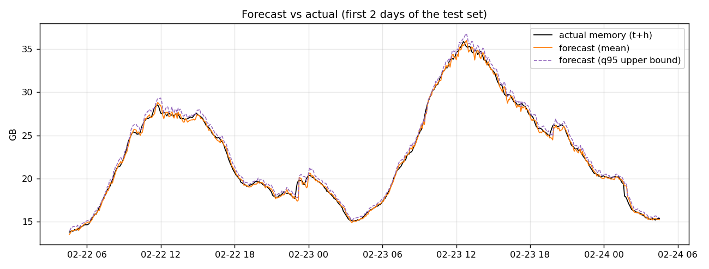
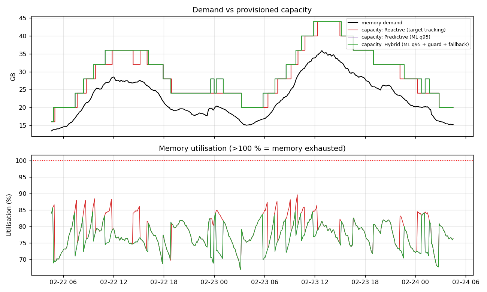
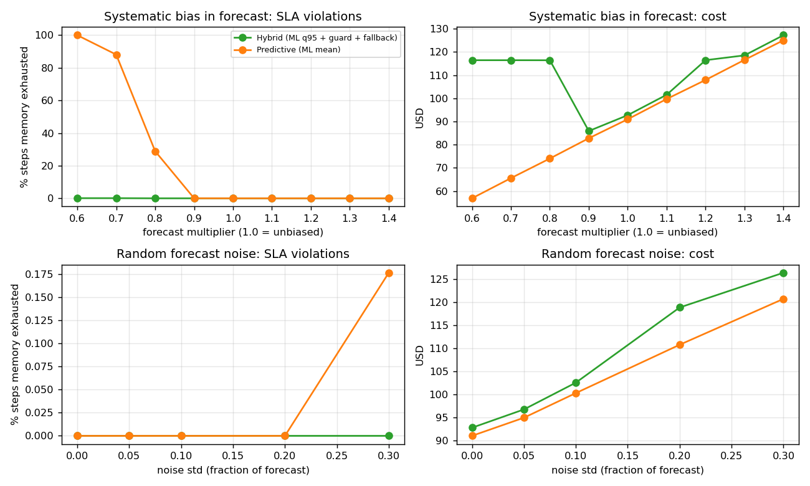
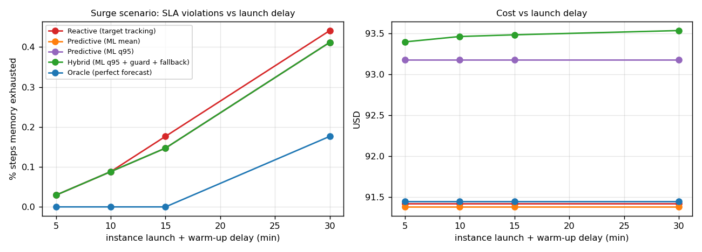

1 · Forecast vs actual memory demand
The forecast made horizon minutes earlier is drawn at the time it applies to, so the orange line is directly comparable with the black one. The purple dashed line is the upper bound (forecast + 1.645σ) used by the q95 and hybrid policies.
2 · Auto-scaling decisions: demand vs provisioned capacity
Capacity = ready instances × memory per instance. Red bands mark steps where the highlighted policy ran out of memory (demand > capacity). Click legend entries to show or hide a policy.
3 · Policy comparison on the held-out 12 days
Break the forecaster on purpose and watch what each policy does. Under-prediction starves the cluster; over-prediction only costs money; sudden surges are limited by how long a new instance takes to launch.
What happened
Capacity vs demand under the broken forecast
Red bands: steps where the ML (mean) policy exhausted memory. Use the window slider on the first tab, or “Jump to worst moment”.
Policy results under this scenario
Sweep: how forecast bias changes the outcome
Steps with memory exhausted (%) vs forecast bias, using the noise and surge settings above.
Total cost (USD, assumed pricing) vs forecast bias. Over-prediction buys safety with money; the hybrid policy’s drift fallback caps the damage of a biased model.
These are the numbers produced by python main.py in the repository (synthetic 60-day trace, last ~12 days held out, 15-minute horizon, best model = MLP 64-32). They differ slightly from the in-browser run, which uses its own random trace and a ridge forecaster.
Forecast accuracy (test set)
| Model | MAE (MB) | RMSE (MB) | MAPE % | R² | Skill vs persistence |
|---|---|---|---|---|---|
| Persistence | 497.00 | 648.12 | 2.01 | 0.99 | 0 % |
| Moving average (1 h) | 1249.48 | 1575.57 | 5.05 | 0.94 | −151 % |
| Seasonal naive (24 h) | 436.76 | 597.49 | 1.75 | 0.99 | 12 % |
| Ridge regression | 256.02 | 367.40 | 1.02 | 1.00 | 48 % |
| Random Forest | 259.50 | 372.03 | 1.03 | 1.00 | 48 % |
| Gradient Boosting | 260.53 | 371.84 | 1.03 | 1.00 | 48 % |
| MLP (64-32) | 252.63 | 361.91 | 1.01 | 1.00 | 49 % |
Policy comparison (normal test period)
| Policy | Util % | Exhausted % | p99 latency (ms) | Cost (USD) | Energy (kWh) |
|---|---|---|---|---|---|
| Static (peak-sized) | 50.30 | 0.00 | 194 | 141.36 | 264.0 |
| Reactive | 78.56 | 0.03 | 333 | 90.95 | 209.5 |
| Predictive (ML mean) | 78.53 | 0.00 | 279 | 90.95 | 209.5 |
| Predictive (ML q95) | 77.00 | 0.00 | 255 | 92.71 | 211.4 |
| Hybrid (q95 + guard + fallback) | 76.99 | 0.00 | 254 | 92.72 | 211.4 |
| Oracle | 78.49 | 0.00 | 263 | 90.98 | 209.5 |
With unforeseen surges injected
| Policy | Util % | Exhausted % | OOM episodes | p99 (ms) | Cost (USD) |
|---|---|---|---|---|---|
| Reactive | 78.52 | 0.18 | 3 | 341 | 91.42 |
| Predictive (ML mean) | 78.52 | 0.15 | 2 | 283 | 91.38 |
| Hybrid | 76.83 | 0.15 | 2 | 259 | 93.49 |
| Oracle | 78.46 | 0.00 | 0 | 263 | 91.44 |
Figures




System design
cloud/collect_metrics.py)cloud/aws_apply.py)How the assignment items are covered
| Item | Answer | Where to see it |
|---|---|---|
| Input data and features | Memory MB and request rate every 5 min; 21 features in this demo (32 in the Python pipeline) | Chart 1, src/features.py |
| Algorithm and horizon | Ridge here (closed form, trained in the page); MLP is best in Python. Horizon 15 min = typical instance launch time, swept 5–60 min | Horizon selector, KPI strip |
| Allocation / auto-scaling | Size for forecast ÷ target utilisation; scale out at once but capacity arrives after the launch delay; scale in only to the highest request of the last 30 min | Chart 2 and replay |
| Evaluation | Accuracy (MAE/MAPE/skill), utilisation, latency proxy, cost, energy vs static and reactive baselines | KPI strip, policy table |
| Wrong predictions | Bias, noise and surge injection; hybrid policy adds an emergency guard and a drift fallback to reactive sizing | Tab 2 |
Assumptions (all editable in ClusterConfig)
- Price $0.0416 per instance-hour (about a 4 GB on-demand VM); power 45 W idle to 110 W busy per instance.
- Latency proxy = 40 ms ÷ (1 − utilisation), capped near saturation; 2000 ms when memory is exhausted.
- Static baseline is sized for the peak of the test period plus 20 % headroom.
- Only memory is modelled; the workload is synthetic with request rate leading memory by about 15 minutes.
- The q95 bound here is forecast + 1.645σ (Gaussian), a simpler stand-in for the quantile model in Python; its measured coverage is shown in the KPI strip.